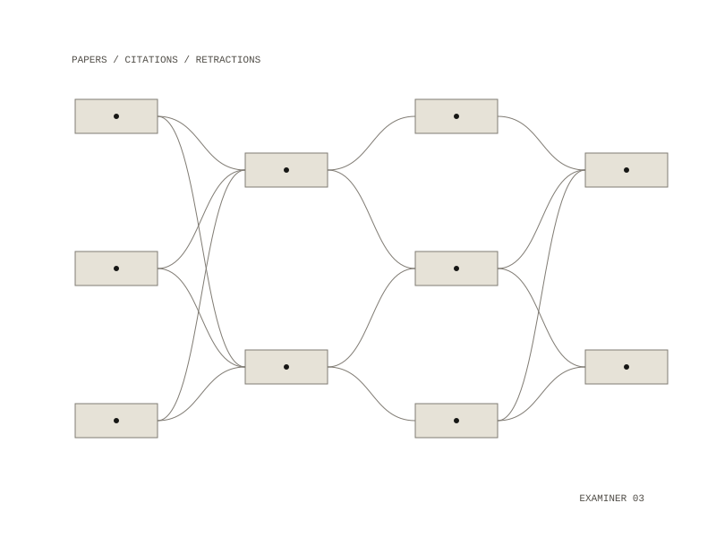

mcp-vetiver
mcp-vetiver puts free scholarly databases behind a small set of narrowly scoped tools, so the Vetiver paper-appraisal pipeline can search for, resolve and appraise papers without touching the open web directly. It is a Python server that an agent calls over the Model Context Protocol on standard input and output.

Tools
search_papersreturns candidate papers for a topicget_metadatareturns a normalized title, authors, year, venue and type for a DOIget_referenceslists the works a paper citesget_citationslists the works that cite itcheck_retractionreports whether a paper has been retracted
Every tool returns the same paper record: DOI, title, authors with affiliations, year, venue, type, citation count, retraction flag, provider ID and source. A retraction check on a paper the database does not know returns an unknown value, which is kept distinct from "not retracted". The sources are free and most need no key.
Only allowlisted hosts
Its one invariant: no compromising downloads. Every fetch must pass a host check, and only six scholarly hosts can be reached. The host is checked again on every redirect, with at most three redirects; responses are capped at 25 MB and must be JSON. Fetched content is never executed, and adding a host is meant to be a deliberate, reviewed change. Vetiver relies on this: it trusts that anything the server returns came from an allowlisted scholarly source.
Tests
The test suite runs offline: the network call is replaced in tests, and the fixtures copy the shapes of real OpenAlex and Crossref responses.
OpenAlex and Crossref, with PubMed, Europe PMC, Unpaywall and Retraction Watch on the allowlist
search papers, get metadata, get references, get citations, check retraction